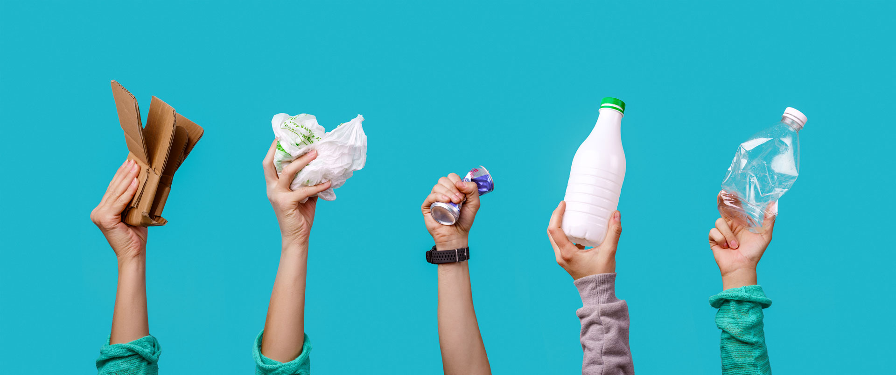
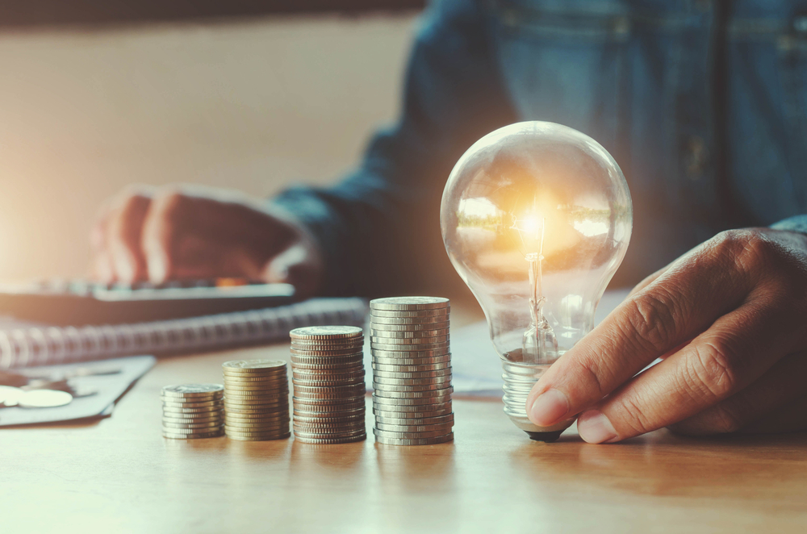

A água é um dos recursos naturais mais importantes do mundo, sendo essencial e indispensável para diversos
usos tanto de maneira cotidiana quanto de forma empresarial, de forma que também é um dos recursos mais
desperdiçados do mundo.
Quer saber algumas dicas para reduzir o consumo em casa e contribuir com o seu bairro e
com o planeta?
Cronometre o banho:
Um banho de 15 minutos pode gastar até 135 litros de água. Se você reduzir o tempo embaixo do chuveiro
para 5 minutos, apenas 45 litros são utilizados. Portanto, o ideal é optar por banhos rápidos, que durem o
tempo necessário para fazer a higienização do corpo.
Reaproveite a água da máquina de lavar:
A água utilizada na máquina de lavar costuma ser descartada pelo ralo. No entanto, por conter apenas
resíduos de sabão, na maioria dos casos, ela pode ser reaproveitada e servir para lavar pisos, lavar o
quintal e até regar plantas.
Verifique e corrija quaisquer vazamentos:
Infiltrações e vazamentos podem acontecer sem que você perceba e representar um elevado desperdício de
água. Goteiras e manchas na parede são indícios que aparecem quando problemas maiores já se instalaram
há mais tempo. Outros sinais são mofo, pintura com bolhas, pintura com aspecto umedecido e bolor.

Reciclagem
A reciclagem é hoje uma das principais formas de preservação do meio ambiente, tendo como função
reaproveitar e dar uma nova função ao que seria descartado.
Para vivermos em um mundo mais sustentável separamos algumas dicas de sustentabilidade
que irão te ajudar a ser sustentável:
Aproveite o lixo orgânico:
Alguns restos de alimentos, como cascas de frutas, legumes e ovos que não são consumidos podem adquirir
novas funções, como a utilização para novas receitas ou transformá-lo em adubo para os canteiros de
plantas.
Descarte seguro de eletrônicos:
Por se tratar de um material muito utilizado por todos e ter a sua decomposição tóxica, os equipamentos
eletrônicos devem ser descartados em pontos de coleta específicos. Escolas, lojas de equipamentos e outros
locais que possuam um ponto de coleta específico. Para saber mais, acesse o site da prefeitura de sua
cidade.
Substitua as sacolas plásticas:
Esse hábito já é adotado por várias pessoas e é um dos mais simples que você pode fazer para cuidar do
meio ambiente. Apostar em sacolas reutilizáveis e recicláveis para te acompanhar nas compras faz com que
uma cadeia de poluição que afeta os oceanos, animais marinhos e até mesmo o ar seja quebrado, monte seu
acervo de ecobags e sempre tenha uma dentro da sua bolsa ou mochila do dia a dia.

Economia de Energia
Economizar energia elétrica é uma ação importante tanto para seu bolso quanto para o meio ambiente,
praticando
um consumo consciente e ter atenção as contas de luz é essencial para uma boa economia no fim do mês e um
ambiente mais saudável.
Aqui vão algumas dicas para reduzir a conta de luz e economizar no fim do mês:
Retirar da tomada os aparelhos que não estão sendo utilizados:
Uma das dicas mais importantes para quem quer economizar energia elétrica é sempre retirar da tomada os
aparelhos que não estão sendo usados. Isso porque equipamentos como TV e videogame ficam no modo espera
(stand-by) e, dessa forma, continuam consumindo energia elétrica.
Trocar as lâmpadas por modelos de LED:
Outro passo importante para evitar o desperdício de energia é trocar as lâmpadas incandescentes e
fluorescentes por modelos de LED, que são mais eficientes e duráveis. Mesmo que esse tipo de lâmpada seja
mais caro, a economia gerada pelo menor consumo compensa.
Apagar as luzes ao sair do cômodo:
É muito importante desligar o interruptor ao sair de um quarto. Outra ação que ajuda é aproveitar ao
máximo a luz natural. Assim, se um cômodo está iluminado com a luz solar, evite acender lâmpadas sem
necessidade.
Mantenha as janelas e as cortinas abertas e deixe a luz elétrica apagada o máximo de tempo possível.